Phoenix și salvarea designului
O călătorie la Mike Hoge pentru Aniversarea Gothic de 20 de ani
[ Tradus din germană de Catalin aka catalinux ]
24.12.2020 - Intrare nouă în jurnal
Ora 22. Mâinile îmi tremură din apăsarea tastaturii.
În ultimele două luni am pierdut 10 kg, ceea ce mi-a luat 2 ani să câștig. Îngropat sub ruinele templului pe care îl construisem pentru mine. Se prăbușise. Dar „obligația trebuie dusă până la capăt, pentru că este scris în vechile pergamente că se va întâmpla”, așa cum spunea Mike într-un interviu în 1998, când Viziunea despre Gothic era încă puțin diferită.
Cu câteva zile înainte am lucrat până noaptea târziu pentru a obține o actualizare pregătită la timp, o nouă versiune a Arhivei Gothic și un nou site web: phoenixthegame.com. De asemenea, ar trebui să dezvăluie PHOENIX ca numele jocului „nostru”. A-l numi „jocul nostru” necesită un efort, având în vedere că ne vedem pe noi înșine ca moștenitori ai unei viziuni care a fost dezvoltată de alții acum 20 de ani când eram doar niște copii.
Credem că în cele din urmă o putem admite, că am interiorizat ideea, am dezvoltat-o în continuare și am creat din ea ceva nou și propriu.
Dar suficient cu visarea. Visul vrea să fie propagat. O nouă siglă pe un nou site web, pe un domeniu nou, care inevitabil a trebuit să le amintească fiecărui fan Gothic și fiecărui modder Gothic vechiul gothicthegame.com - site-ul web al publicistului Egmont Interactive.
Această ușurare, când am terminat în sfârșit în Ajunul Crăciunului în jurul orei 21:00... O altă Discuție în Forum, o actualizare pe Mastodon (Nimeni nu se uită acolo, dar principalul lucru nu este Twitter). Era ora 10. Nu mâncasem nimic toată ziua. Actualizarea a fost mai importantă. Am ieșit în oraș căutând ceva de mâncare, un magazin trebuia să fie deschis. Totul pentru... Ei bine, cel puțin aș putea citi câteva reacții la darurile noaste. Hrănesc și ele, cel puțin motivația.
Dar nu existau. Cine ar trebui să vadă forumul în Ajunul Crăciunului? Stomacul gol, capul plin și inima frântă. Crăciun singuratic.
Orice ar fi: visul unui joc, iată-l. Asta e tot ce pot face.

25.12.2020 - Intrare nouă în jurnal
Da, mai pot face ceva. Cu câteva luni înainte, fusesem îndemnat să iau legătura în cele din urmă cu THQ, care sunt acum noii titulari de drepturi ai GOTHIC, pe care se bazează PHOENIX. Pentru a vorbi despre manipularea versiunilor demo pre-alfa și a altor materiale. De fiecare dată îmi spuneam: Nu este momentul. S-au întrebat ce așteptam.
Așteptam să ajungem într-un punct în care o astfel de cerere ar face orice impresie. A trebuit să acționăm diferit. Trebuia să știm ce vrem. Ideea trebuia să fie ascuțită ca lama unei sabii, altfel nu va pătrunde. Cu alte cuvinte: viziunea trebuia să fie clară și trebuia să fie clar pentru ceilalți cât de clară este pentru noi. Aveam nevoie de ceva de genul unui pitch. Sau cel puțin un fel de pitch pentru un pitch viitor. Și aceasta a fost noua pagină a proiectului.
Acum aveam totul împreună: o arhivă care a crescut încet (gothicarchive.org), care, datorită lui Martin Dietrich, a primit puțină atenție în presă. Un site pentru studioul nostru independent (phoenixtales.de) și noul site pentru joc (phoenixthegame.com).
Luând toate acestea împreună, i-am scris persoanei responsabile la THQ. Și surprinzător, un răspuns. În aceeași zi. Și ce răspuns!
Din când în când, am verificat forumul la worldofgothic.de. Locul în care este încă adunată cea mai veche comunitate (încă existentă) din jurul jocului Gothic. Mă așteptam la puțin entuziasm. Nu s-a intamplat nimic. Dar nu ar trebui să-mi pese. Motto-ul rămâne sacrificiul fructului, consecința care nu este în mâna mea; într-adevăr, după cum spune Gita, recompensa este, de fapt, singură. Dar răspunsul THQ a fost un fruct dulce. Un mic cadou de Crăciun.
Și mai erau și alte daruri.
Vreau să mă alătur ție
Intrare nouă în jurnal
Din când în când, Oliver aka logx și eu am încercat să câștigăm în mod activ noi membri pentru proiectul nostru. Fără succes. Am crezut și am tot spus: Dacă cineva într-adevăr vrea să ne ajute, atunci ar veni de la sine.

<poet-mode> Visul ar funcționa ca o scânteie care îi aprinde inima, făcându-l încet să ardă pentru asta până se va consuma în ea. Pui ceva din tine în proiect. Unii puțin mai mult. Dar murim cu toții. Supraviețuirea numai în măsura în care ne epuizăm: ceea ce păstrăm moare; ceea ce dăm trăiește mai departe. </poet-mode>
Și un proiect își ia valoarea dintr-un astfel de sacrificiu: sângele, transpirația și lacrimile care sunt lăsate să curgă în materie îl fac atât de special. Fără asta este „doar un fel de joc”. Și cineva care într-un fel doar ne spune că ar putea ne ajută cu ceva? Nu va funcționa. Trebuie să găsești singur motivația, inspirată de viziunea comună pe care Mike Hoge a dezvoltat-o la acea vreme și pe care Tom Putzki a adus-o în lume.
Cu câteva luni mai devreme primisem un e-mail entuziast din România de la Dortman aka Arbax, care dorea să ne susțină ca Story-Writer și de atunci a devenit prieten. Cu câteva săptămâni mai devreme am primit un e-mail din Olanda, de la Adam aka Avallach, care în capul meu era un fel de celebru programator polonez. După cum spunea Oliver: „Porecla lui sonoră contribuie la asta”. Nu cunosc pe nimeni care să fi studiat ZenGin, vechiul motor Gothic al Mad Scientists, atât de mult cât a făcut-o el.
În noaptea de Crăciun a venit o altă aplicație de la Jan aka Riisis ca artist 2D. De atunci are grijă de texturile personajelor noastre. O zi mai târziu, alta de la Fabian aka AmProsius, căruia i s-a permis mai întâi să rezolve greșelile de design web amator. Urmat îndeaproape de Catalin aka catalinux, cunoscut pentru patch-urile sale Gothic. Apoi sunt Jonas, compozitorul nostru și Sebastian, care ne ajută încet cu scenariile.
Nu există un cadou mai bun pentru proiect decât acești oameni care ne ajută. Aplicațiile dvs. care ne-au ajuns sunt pline de entuziasm și vorbesc de la sine:
"Am citit de mai multe ori ideile și articolele frumoase pe care le-ați postat și le-ați oferit publicului (...) Vreau să-mi ofer ajutorul în realizarea acestui frumos proiect la care lucrați ca scriitor / ajutor narativ sau orice altceva care ar putea ajuta procesul de poveste. Pentru a da o mână de ajutor în crearea acestei noi ere a cum și ce ar fi trebuit să fie lumea reală din Gothic de la început." (Arbax)
"Chiar dacă eu nu am scris prea multe în Discuția ta de pe Forum, am absorbit fiecare informație pe care ai publicat-o ca pe un burete. (...) Te rog să-mi dai șansa să dovedesc că sunt demn să te ajut, aș pune inima și sufletul pentru asta." (Riisis)
ACEȘTIA erau oamenii de care aveam nevoie. Phoenix este un proiect necomercial. Realizarea acestuia cere oamenilor să-și sacrifice timpul liber pentru asta; dar o faci doar dacă ești pasionat de cauză. Astfel de oameni vin pe cont propriu dacă vă asigurați că visul strălucește suficient de luminos. Dacă o face, atunci zbori acolo ca o molie care caută lumina.

Știam că vor fi fiabili și implicați activ. Fără să răstoarne nimic prin munca lor și să creeze mai multe probleme decât să le rezolve. Fără a dori să-și impună propriile idei atât de mult încât să distrugă imaginea de ansamblu, ceea ce durează ceva timp să înțeleagă, deoarece proiectul și povestea sunt atât de complexe.
Nu ați dezamăgit. Acesta este modul în care Phoenix Tales a devenit o echipă de oameni care continuă să se dezvolte cu pasiune de unde vechiul Piranha Bytes a rămas în 2001.
"Bine ați venit la cuibul Phoenix!" (logx)
Viziunea Alfa
Intrare nouă în jurnal
La început există întotdeauna un anumit entuziasm pentru ideea de proiect. Dar cu cât cineva a fost implicat mai mult în plotul nostru, cu atât au înțeles mai mult ce urma să facem, cu atât au devenit mai entuziaști, cu atât au interiorizat viziunea „noastră” ca a lor.
Este un sentiment ciudat când oamenii vorbesc brusc despre ideile tale și le-au interiorizat atât de mult încât nu trebuie să mai spui nimic; alții îi pot reprezenta la fel de bine ca tine. Ideile încetează să mai fie ale tale.

Când vorbesc despre viziunea „noastră” aici, este pe de o parte pentru că am interiorizat viziunea dezvoltată de părinții spirituali ai GOTHIC atât de mult, ne-am însușit-o, pe de altă parte pentru că am dezvoltat-o în mod creativ în continuare, povestea, precum și principiile de proiectare din spatele ei.
Stăm pe umerii vechilor Piranha Bytes. Nu au făcut doar un joc. Ani de zile ați dezvoltat un cadru ingenios și ați implementat doar o parte din acesta în joc. Așadar, PHOENIX este un amestec dintre ceea ce s-a gândit atunci și ceea ce am visat despre el. Fără ele nu ar exista nimic din toate acestea. Și dacă ar trebui să ne arătăm uneori un pic înfricoșători, se datorează faptului că suntem atât de entuziaști și mișcați de idee.
Oliver și cu mine am petrecut aproximativ doi ani încercând să ne dăm seama cum ar fi putut fi povestea inițial și ce credeam că ar trebui să fie. Așa că am dezvoltat un plot care conține tot ceea ce PB avea în minte în orice moment al timpului și l-am pus împreună într-un tot armonios. Pentru continuarea noastră am preluat toate multele fire de poveste, am legat totul împreună; răsucirile plotului au căzut treptat în mâinile noastre și totul a apărut încet într-un mozaic care ne-a uimit și pe noi înșine. Și așa a fost și cu ceilalți:
"Acest lucru ar putea părea puțin ciudat, dar cu cât citesc mai multe despre poveste și cum progresează, cu atât devine mai mare și mai detaliată, se simte ca o poveste cu un potențial atât de mare, ca un mit grec sau sumerian cu intrigi și atât de multă dezvoltare a complotului." (Arbax)
L-am întrebat pe Fabian cum s-a alăturat proiectului.
Răspunsul a fost grăitor: a mai auzit de proiectele noastre și le-a legat de reconstrucția Alpha, dar nu a văzut ce este atât de atrăgător despre „restaurarea unei versiuni vechi a unui joc”. Ceea ce el nu știa este potențialul inepuizabil al acestei viziuni, pe care o rezumăm sub termenul „Alfa”, că este vorba despre mult mai mult decât „restaurarea a ceva vechi”. Nu suntem reacționari tradiționaliști. Suntem revoluționari în haine vechi.
El a crezut că dezvoltatorii trebuie să fi avut un motiv pentru care au ajuns să facă lucrurile diferit. Au avut și ei. Motive bune. Altfel, jocul s-ar putea să nu fi apărut niciodată. Mike a salvat lansarea de atunci, mai multe despre asta în viitorul nostru interviu.
Dar oricât de bune ar fi motivele lor și la fel de fericiți pe cât ar trebui să fim că aceste decizii au fost luate, atât de mulți dintre cei care au citit primele anunțuri, au văzut primele publicații, își doresc să fie ceva mai mult din ceea ce a fost anunțat inițial. Părți întregi ale poveștii și caracteristici nu au fost implementate din lipsă de timp, altele au fost aruncate din motive tehnice. Cei mai mulți dintre ei nu știu nimic despre evenimentele din poveste care au fost planificate odată, despre cele patru clase cu cele patru stiluri de joc, despre imersiunea prin vizualizare pe care niciun alt joc nu a realizat-o vreodată atât de radical...
Toate acestea au trecut în mod evident de cei care sunt înșiși fani ai goticului și fac parte încă din comunitatea din World of Gothic astăzi. Cu Arhiva Gothic am încercat să facem măcar puțin pentru a schimba ceva în legătură cu aceasta.
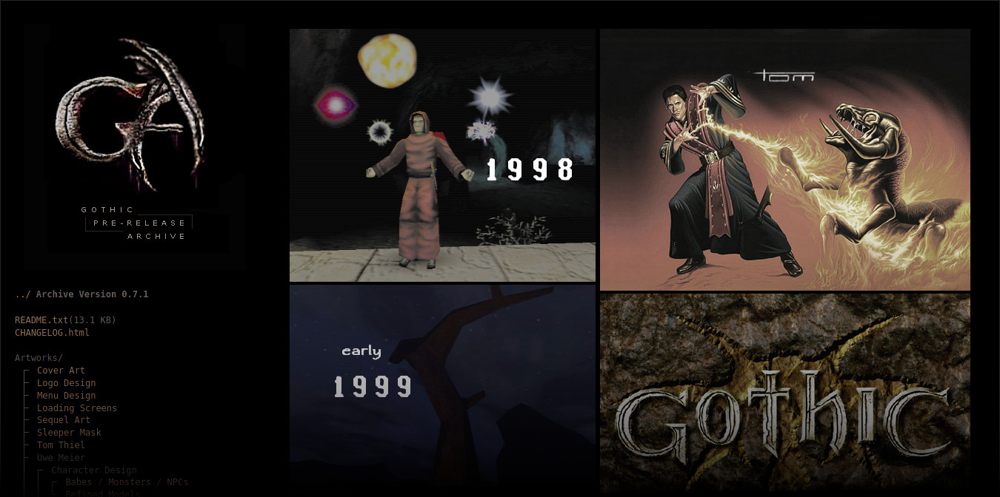
Acest potențial joc, așa cum este exprimat în ideile timpurii, are o fascinație extraordinară. Suntem cel puțin la fel de entuziasmați de potențialul inițial ca și de joc, așa cum a apărut acum 20 de ani.
“Am vrut să facem jocul care cumva poate face totul.” (Mike în Interviu)
GOTHIC este foarte asemănător cu STALKER: Și aici a fost prezentată pentru prima dată o viziune care nu a văzut niciodată lumina zilei. Și aici se dorise prea mult. Ca și aici, fanii încă lucrează astăzi pentru a implementa tot ceea ce nu funcționa atunci din diverse motive, consultați Oblivion Pierdut. Aproape niciun joc nu are atât de multe în comun cu GOTHIC, atmosfera, designul artistic, decorul.

GOTHIC (primul titlu de lucru ORPHEUS, mai târziu PHOENIX) este stabilit în Regatul Myrtana, într-o colonie închisoare - inspirat de Evadare din New York . Orcii au fugit de ura rasială a oamenilor în subteran și și-au construit orașe subterane. Unul dintre aceste orașe ale orcilor este situat în așa-numita Vale a minelor din Khorinis. Condamnații din toată Myrtana sunt aduși în colonia minieră pentru a extrage minereu pentru război. Imperiul este în război cu orcii. Pentru a face imposibilă orice evadare și pentru a asigura aprovizionarea cu minereu magic, care este exploatat în valea Khorinis și despre care se spune că este decisiv pentru război, regele îi pune pe magii săi să ridice o barieră magică în jurul văii. Dar, în loc de control total, creează haos. Când ritualul merge prost și îi face prizonieri pe magi, o revoltă izbucnește în închisoare. Prizonierii ucid gardienii și preiau controlul asupra închisorii. Se creează o tabără în jurul fostei cetăți a închisorii din centrul văii și a unei noi structuri de putere.
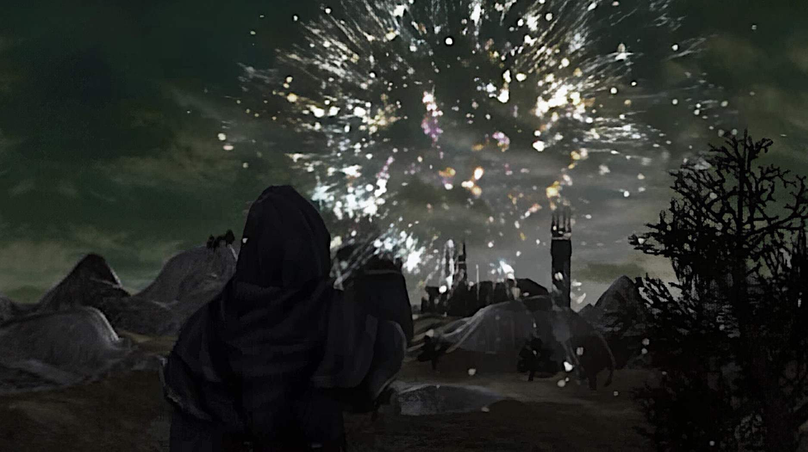
Asupriți de cei mai puternici care au predominat în revoltă, „baronii minereului” și gărzile lor, care preiau uniformele foștilor gărzi, „săpătorii” sunt obligați să lucreze în mine pentru a continua să aprovizioneze regele cu livrări de minereu, care în schimb îndeplinește cerințele baronilor. La scurt timp, vechea tabără s-a despărțit și a fost creată o nouă tabără, în care toți cei care vor să scape de stăpânirea arbarilor caută refugiu. Își dezvolță propria mină și lucrează la un plan de evadare.
Viziunile unui săpător creează o a treia tabără în mlaștină: o frăție care a renunțat la vechii zei și care se închină „adormitului”, o ființă care, după cum cred ei, îi va elibera de închisoare când se va trezi. Așa că lucrează neobosit pentru a-l trezi.
Jucătorul este aruncat în această închisoare. Poate alege cărei facțiuni să se alăture și ce cale să urmeze (războinic, magician, hoț sau psionic) pentru a atinge scopul jocului: libertatea.
GOTHIC a avut un cadru ingenios și a fost și este și astăzi revoluționar. Dar și mai mult decât viziunea de bază este cea pe care o caracterizăm aproximativ ca „alfa”.
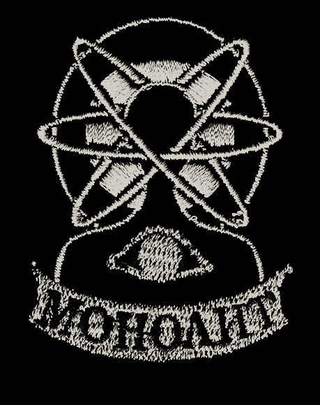
La fel și cu STALKER: În așa-numita „zonă” din Cernobîl, diverse facțiuni luptă pentru supremație. În centrul lor se află sarcofagul, puternic păzit de monolit, o sectă fanatică în jurul monolitului pe care îl venerau; dar ei înșiși sunt victime ale conștiinței C, o supra-conștiință care le controlează, la fel ca secta din GOTHIC, care se află sub influența celui care doarme.
Există mutanți puternici peste tot în zonă din cauza radiației radioactive; în colonie, monștrii sunt cei care are mutații prin minereul magic etc.
Mulți dintre cei pe care îi cunosc, care sunt entuziasmați de viziunea timpurie a jocului Gothic, au petrecut, de asemenea, mult timp în zonă. Nimeni nu ar trebui să fie surprins de ce. ;)
"Mi-a plăcut STALKER 1!" (Mike în Interviu)
Jucătorii nu știu nimic (mai mult) despre astfel de conexiuni mai profunde, deoarece acestea sunt lucrurile care nu au intrat în joc. Lucrurile pe care le aducem înapoi.
S-au simțit alții ca Fabian? Câți au trecut cu vederea proiectul nostru pentru că l-au înțeles greșit? Prezentarea a fost evident importantă. Doar noul site web și filozofia de proiectare pe care Oliver și cu mine o elaborasem i-au convins.
Mă apăr împotriva acuzației de a face nedreptatea jocului final, subliniind atât de mult ceea ce nu a fost posibil în cele din urmă. Pentru că să nu subliniem acest lucru ar fi să facem nedreptate jocului Gothic. Ar însemna să trecem cu vederea majoritatea pasiunii care a intrat în proiect. Ar însemna să trecem cu vederea profunzimea inerentă designului, dar care nu putea fi exprimată în joc.
Punându-mi accentul pe acesta, arăt că GOTHIC a fost mult mai mult decât ceea ce s-a prezentat în cele din urmă. A nu sublinia acest lucru ar însemna reducerea locului Gothic la ceea ce a rămas la suprafață.
Este posibil ca o parte a comunității să fie pe deplin mulțumită de ea. Nu suntem. Vrem să ajutăm jocul să recâștige adâncimea dorită pe care trebuia să o arunce peste bord în sprintul către Goldmaster. De aceea ne scufundăm în această mare a Alfa pentru a recupera comorile.
Viva la (Re)Vision!
Vizita lui Mike
30.12.2020 - Intrare nouă în jurnal
Oliver m-a convins mai întâi să folosesc Discord din nou ca parte a proiectului, să organizeze munca pe el. În ultimele câteva luni, am organizat-o pe Signal și e-mail și am respins Discord (considerații fundamentale de confidențialitate, care de obicei eșuează, deoarece contactele nici nu vor să-și cripteze e-mailurile...).
Acum aveam toți acești membri noi ai echipei. Discord a fost de ajutor, încăpățânarea mea nu. Oliver avea dreptate. Uneori trebuie să faci un mic efort, la început fără tragere de inimă, pentru a mă muta la o decizie pe care o găsesc și eu imediat după aceea.
M-am gândit că, dacă aș prefera o alternativă gratuită, pot încă să trăiesc cu Discord și să îl folosesc ca parte a proiectului, atâta timp cât nu există una mai bună. Și întrucât încă nu se întâmpla nimic pe forum și lucrările la Discord mergeau atât de bine, am sugerat chiar să deschid eu un canal public.
„Nu sunt împotriva ei în principiu”, se spune. Zis și făcut.
Ne-am întrebat mult timp unde ar putea fi toți oamenii care încă visează la vechea viziune Gothic. Am avut impresia că în comunitatea germană nu mai era aproape nimeni care să fie încă interesat de ideile radicale ale „Alpha”. Deodată, toți s-au adunat aici. Nu mulți. Dar un nucleu dur al celor interesați. Chiar și câțiva oameni care s-au denumit „fani” ai proiectului din cauza actualizărilor noastre. Nu aș putea spera la mai multe pentru acest stadiu incipient de dezvoltare. Mai ales că nu am făcut încă nicio prezentare de presă.
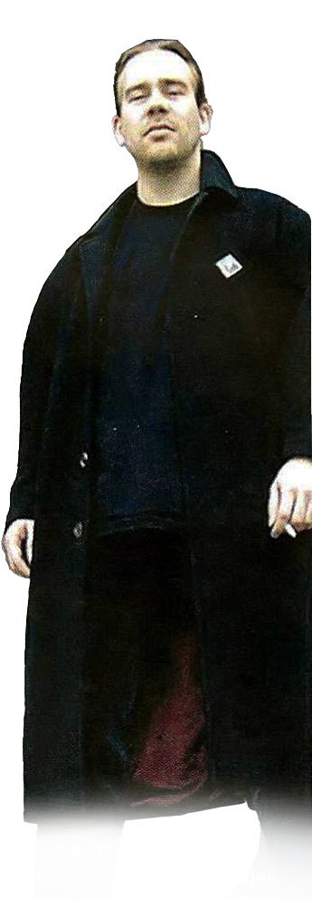
La o zi după deschiderea canalului, a existat un alt cadou: Mike Hoge, tatăl spiritual al GOTHIC, ni s-a alăturat pe canal. Porecla sa: Adanos (unul dintre zeii din universul GOTIC).
Cu câteva zile înainte discutasem cu Oliver. Chiar ar trebui să numim proiectul PHOENIX? Se îndrăgostise de titlul nostru de lucru NYX. Și eu. L-am ales acum doi ani sau ceva, am proiectat o siglă pentru el - pe care o folosim în continuare ca simbol. Și tocmai eram pe punctul de a obține domeniul nyxthegame.com când am văzut că există deja un joc cu același nume sub el. „Din întâmplare” scrie:
'Nyx - Trezirea'. Textul promoției lui spune:
Bine ați venit la coșmar.
Te găsești într-un oraș nord-american din anii '80 - NYX, vechea zeiță a nopții, a capturat încă un suflet muritor pentru a-și juca jocurile mintale chinuitoare. [...]
NYX: Trezirea este o explozie a nostalgiei retro a anilor 80 - cufundați-vă în muzică, în lume și descoperiți toate omagiile aduse clasicilor culturii pop din acel deceniu de neon!
Oricare ar fi: Accesorii pentru dezvoltatori. ;)
A trebuit să găsesc altceva și phoenixthegame era disponibil. După ce a fost publicat primul pitch Gothic al lui Mike, care încă avea titlul de lucru Phoenix și disponibilitatea domeniului ca semn suplimentar, mi-a fost clar că acesta era decizia corectă. Am creat prima schiță a logo-ului nostru Phoenix, care se bazează pe vechiul logo Gothic, cu GIMP în timpul unei clase plictisitoare la școală.
Am fost sigur că sub acest nume va fi mult mai probabil să atragem atenția fondatorilor și a altor foști dezvoltatori ai GOTHIC.
Tom Putzki ne-a contactat după lansarea versiunii 0.5 a arhivei noastre pentru a contribui cu materiale. Deci, ei au încă cel puțin un interes periferic față de bătrânul lor copil. Gothic trăiește. Chiar și după 20 de ani.
Am profitat de ocazie și i-am prezentat pe scurt lui Mike Phoenix Tales, arhiva noastră Gothic și proiectul. Întrucât Mike a prezentat câteva piese din vechile sale documente de design despre Gothic într-un flux live cu KaiRo (Kai Rosenkranz, compozitorul muzicii GOTHIC), pe care le-a păstrat în dosare groase, au fost în zadar diferite încercări de a găsi digitalizate aceste concepte. El a fost deschis despre digitalizarea acestora, dar are prea puțin timp și documente prea multe. Nu putea face asta singur. Așa că m-am oferit să le digitalizez pentru a 20-a aniversare a lui GOTHIC. Și el a răspuns.
L-aș vizita luna viitoare și i-aș salva conceptele de design pentru posteritate: ca parte a istoriei jocurilor pentru arhiva noastră, ca modele neprețuite pentru jocul nostru și ca un cadou pentru comunitate.
31.12.2020
S-au întâmplat multe în ultimul an. Salvarea celor două versiuni pre-alfa, Vertical slice și demo-ul de presă 0.64b. Multe dintre ultimele detalii misterioase ale vechii povești ar putea fi rezolvate împreună (Mike mi-ar confirma majoritatea mai târziu).
Și acum în ultima zi a anului, am reușit în noul nostru canal, în acest melting pot of freaks, să facem multiplayer-ul Gothic original să lucreze în demo-ul pre-alfa 0.56c.

După mai bine de 20 de ani, doi jucători s-au conectat în LAN prin Hamachi și au trecut împreună prin vechiul nivel de testare. Erau lângă ei. Cine ar înțelege acest entuziasm? Acolo stăteau, aproximativ o jumătate de duzină de băieți, conectați prin Gothic, în Germania, Polonia, Austria, Rusia, Republica Cehă și Ucraina și erau la fel de fericiți ca și copiii mici cu privire la experimentul reușit.
Gothic inspiră. Chiar și după 20 de ani.
Vizită la Mike
Intrare nouă în jurnal
01.01.2021 - O întâlnire cu Mike Hoge... Este mare lucru când îți dedici timpul liber unui joc vechi de 20 de ani pe care l-a proiectat. Și primele schițe ale acestuia se află în aceleași foldere! Încredințarea lor nouă este un mare cadou. Așa că am sugerat să-i dăm și lui Mike ceva.
29.01.2021 - Reuniunea ar trebui să aibă loc astăzi.
Ora 11. Călătoria începe și am luat prea multă cafea. Structurez întrebările pentru Mike cu mâinile tremurânde - iată-le din nou. Nu sunt obișnuit cu cofeina.
Ora 15. Sunt un pic nervos. Dar cel puțin Thinkpad-ul meu este pregătit.
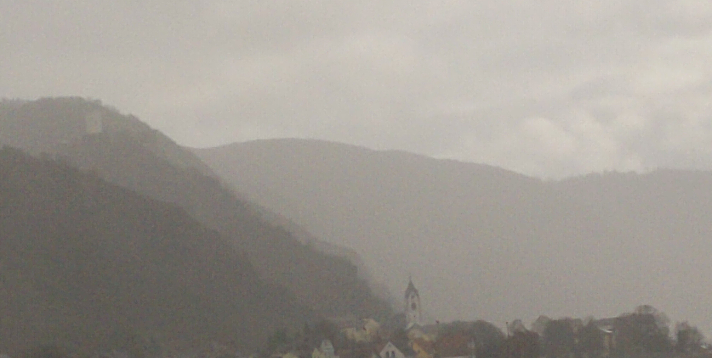
Călătoria mă duce pe lângă podgoriile, castelele și palatele de pe Rinul auriu.
A fost un anunț:
„Astăzi NU ne oprim în Essen! Repet: astăzi NU ne oprim în Essen! "
5 secunde mai târziu: „Ne oprim astăzi în Essen!”
Norocos. Totul va fi bine.
30.01.2021 - Întâlnirea cu Mike
Ieri la 16:30 am ajuns la Bochum. La ora 17 am fost la ușa lui Mike.
Am avut timp până la 21:30. Apoi a trebuit să iau trenul înapoi.
A fost puțin suprarealist la început să stai în sufrageria lui Mike Hoge și să-l vezi cum se plimba în sus și în jos în timp ce era la telefon cu Sascha Henrichs.
Mi-a arătat raftul său, pe care pusese toate lucrurile Gothic pe care le putea găsi în timp ce se pregătea să se mute. Nu atât de mult cât ar putea crede unii. Nu are o singură ediție de Gothic 3. Își amintește proiectul doar cu durere. Nu o singură cutie de carton de la Gothic 1, ci doar CD-urile. Pe raft era un afiș pentru Risen. „Nimănui nu-i pasă, eu o voi arunca”.
Evident, nu este un colecționar, mai mult decât mine.
Dar nu am venit din cauza unor bunătăți fizice, ci din cauza design-urilor. Încetul cu încetul am dus la masă cele trei foldere și câteva CD-uri. Apoi am trecut pe rând pentru a decide ce aș vrea și ce nu voi lua cu mine.
După cum am spus, având în vedere că am primit aceste daruri valoroase, i-am adus câteva chiar lui Mike. Avallach îmi sugerase să-i forjăm o sabie. Imaginați-vă că aș fi apărut cu Uriziel. Ar fi fost un cadou... Dar avem prea puțini bani și prea multe idei. ;)

În schimb, i-am adus o copie a celei mai recente versiuni a arhivei noastre Gothic, cele două demo-uri pre-alfa care au fost salvate nu cu mult timp în urmă - a fost foarte mulțumit de ele - și un alt demo din modificarea inspirată de Alpha din Ucraina pe care Mike, creatorul, mi-a cerut să o dau.
După ce am clarificat ce îmi va oferi, am inițiat un mic interviu amator cu întrebările noastre și cu cele din comunitatea Gothic pe care le pregătisem. Ei bine, nu a fost atât de mic. A durat aproximativ 80 de minute și tastarea a durat probabil de două ori mai mult. Am lăsat deoparte câteva pasaje. Ar trebui să fie despre Gothic, nu despre conflicte din trecut.
Nu am putut rezolva toate întrebările. Unele pe care am uitat să le întreb, altele la care nu a putut răspunde, pentru altele nu mai era timp - iar altele ar fi trebuit să le omit - scuze Mike, mereu acești ciudați...;) De asemenea, a anunțat că va avea vizitatori seara încât m-am grăbit cu întrebările.
Vizita a fost făcută de doi prieteni, cam de vârsta mea. L-au întâlnit pe Mike pentru a juca cărți.
Jocul se numește „Tichu”. Se pare că provine din China, potrivit lui Mike doar un truc de marketing. Există doar patru jucători în el, așa că am mers împreună cu el.

Mike mi-a explicat regulile. Mi s-a părut foarte complex și nu pot să spun că l-am înțeles. A devenit clar doar în timpul jocului. Oricum, există un câine, un dragon și... un Phoenix! Numit și Nexus. Nu voi încerca să vă explic ce face; poți afla singur (sau încerca). L-am avut o dată și l-am irosit în timp ce Mike arunca bombă după bombă. L-am auzit pe Billy Talent. Eram într-o echipă cu Mike și am câștigat. Dar Mike îl joacă de atunci... Ei bine? Timp de 20 de ani.
Ar trebui permise atâtea informații personale: Mike este mișto, opusul distanței. El este autentic și direct și m-a ajutat să mă simt bine și să nu fiu prea entuziasmat. Mi-a oferit suficientă cafea pentru a face lungul drum spre casă cu care mă confruntam. Și ca să nu trebuiască să duc dosarele la gară timp de o jumătate de oră, el m-a dus acolo.
Mi s-a cerut special să fac o fotografie cu el. Am uitat... scuze. Poate data viitoare.
ULa ora 22, călătoria de întoarcere.
Oliver a scris:
Intrare în jurnal nou:
Faceți cunoștință cu Mike, Creierul
+10,000 EXP
În Haga a trebuit să aștept un tren care întârzia 80 de minute...
S-a făcut frig și am profitat de ocazie pentru a face câteva stat-în-mâini la miezul nopții.

Acrobatia a fost suspendată de la Corona. Circul, sportul - la sol, toate spectacolele, Campionatul Mondial - anulat, visele multor acrobați - distruse. La fel ca visul meu... Un șoc în întuneric. Un templu în ruine. Dar focul încă arde. Și atâta timp cât arde, fenixul se poate ridica din nou. La fel ca Phoenixul Gothic.
Când am fost în sfârșit în tren, m-am uitat la documente și am putut spune comunității despre întâlnire. Cu mâinile reci și tremurate, am despachetat folderele și m-am uitat pentru prima dată la comorile pe care le aveam cu mine.
Conceptele de proiectare
31.01.2021 - Intrare nouă în jurnal
Zvonurile spun că Piranha Bytes a vrut să arunce aceste dosare vechi la coșul de gunoi. Sol contaminat, ca să zic așa. Mike a împiedicat asta, mulțumită lui Adanos. Acum sunt cu mine și voi avea grijă să nu se piardă.
Mike mi le-a descris ca fiind doodle-urile unui designer de jocuri nebun. Omul este smerit. Dar pentru noi sunt ultimul puzzle al anilor noștri de cercetare, „Alpha Research”, așa cum îl numim noi. De asemenea, conțin schițe vechi de niveluri și personaje pe care nimeni nu le-a mai văzut înainte. Le vom implementa în joc.
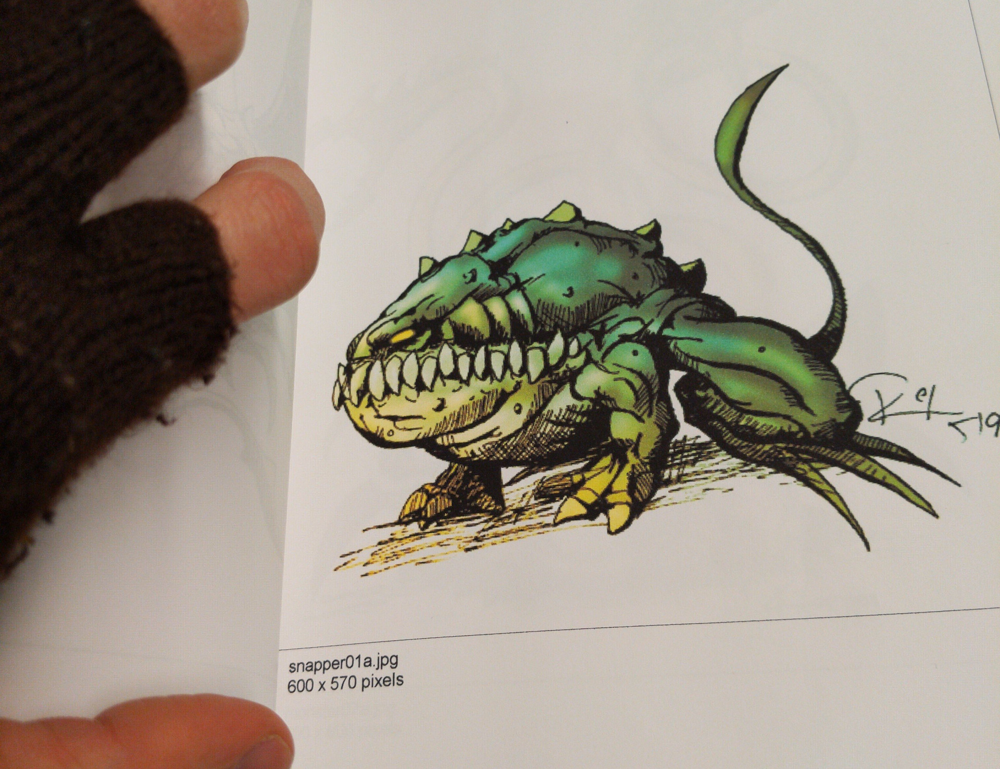
Mike și-a scris, schițat și desenat ideile pentru joc pe aproape 400 de pagini. Au fost mult mai multe, dar s-au pierdut multe de-a lungul anilor. Există, de asemenea, aproximativ 150 de desene conceptuale ale lui Ralf, dintre care unele nu au fost niciodată publicate (de exemplu, pentru Templul adormitului) și unele lucrări de artă ale lui Vadim, care a proiectat monștrii. În cel de-al treilea dosar este un întreg roman Gothic în care un prieten al dezvoltatorilor a scris o poveste inspirată de primele modele pe 159 de pagini A4.
Dar nu vreau să intru în conținutul documentelor în acest moment. La sfârșitul acestui eseu puteți vedea prima publicație din ea pentru voi. :)
La întoarcere am schimbat trenul de patru ori și a trebuit să stau treaz toată noaptea. Nu numai pentru că drumul de întoarcere a durat toată noaptea, bineînțeles că a trebuit să fiu și eu atentă la bandiții care ar putea veni după artefacte.

“Sunt totuși foarte alarmat, cu grijă la bandiți.
Quentin pândește întotdeauna după colț.“ [04:38 AM]
Acum aproximativ 19 ani, l-am văzut pe vărul meu jucând pentru prima dată Gothic. Fapt amuzant: același văr care a jucat Gothic la acea vreme, care mi-a adus jocurile pe computer mai aproape de el - Gothic, precum și Max Payne, Alice și Stalker și deci majoritatea titlurilor care mă influențează pe mine și proiectul nostru - mi-a dat scanerul său pentru a digitaliza documentele de proiectare.
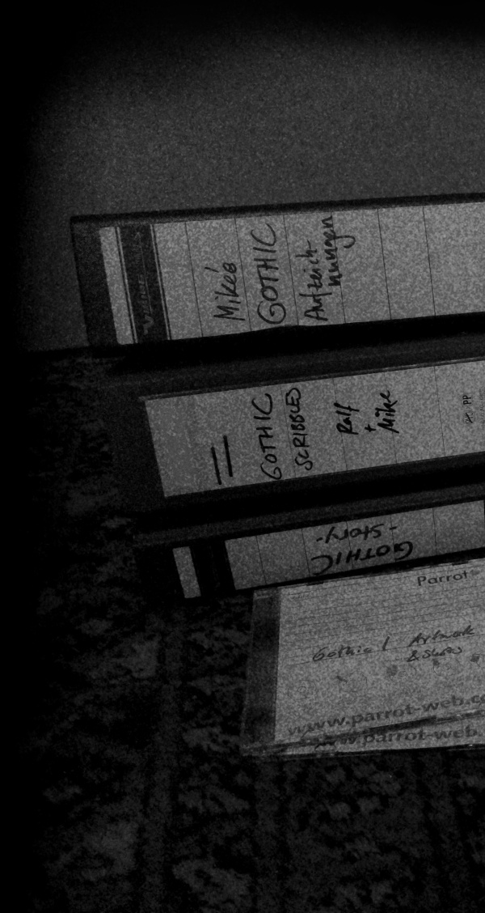
Ciudat cum un lucru duce la altul. Dacă nu l-aș fi văzut jucând acest joc acum 20 de ani, nu l-aș fi jucat niciodată. Dacă Issues nu s-ar fi ocupat de Alpha și ar fi lucrat la ediția Anniversary (pe atunci pentru a 15-a aniversare), nu aș fi avut niciodată ideea de a începe un astfel de proiect, iar Phoenix Tales și arhiva nu ar fi fost create niciodată. Acest lucru, la rândul său, nu ar fi la fel de mare dacă nu ar fi fost anii de muncă detaliată puși de odin68 în cronologia sa.
Pe de altă parte, nu știam nici jumătate despre conținutul tăiat pe care îl restaurăm în Phoenix - și asta ne-a inspirat viziunea unei imersiuni și mai consistente prin vizualizare pe care trebuia să o digerăm cu toții înainte de a fi convinși că vrem cu adevărat să o facem așa - așa cum știm astăzi, Dmitriy, Vaana și alții nu ar fi încercat atât de mult versiunile alfa.
La rândul său, designul meu i-a inspirat pe Oliver și pe alții care l-au modelat de atunci. Dacă nu m-ar fi îndemnat să folosesc din nou Discord, nici eu nu aș fi făcut asta. Mike nu ar fi fost pe canal dacă nu ar fi fost informat la momentul potrivit.
Așadar, toate aceste mici evenimente și influența a numeroși oameni din diferite părți ale lumii au dus la acest moment: că ținem acum aceste documente în mâinile noastre. O rețea de influențe, prea complexă pentru a le înțelege pe toate. Mulțumesc lui Mike și tuturor celor a căror influență reciprocă a făcut acest lucru posibil.
Călătoria de întoarcere a început la ora 22:00. Eram acasă la 8 dimineața următoare.
Când am ajuns în orașul meu natal, a fost din nou lumină.

Un sentiment ciudat de a fi mers atât de ușor și atât de greu de revenit.
La început am scris că am slăbit 10 kilograme. Am cântărit materialul acasă. Geanta mea cântărea 10 kg... Aici o am din nou.
Somn dulce, vise amare... Goticul poate fi viu, dar adormit. În partea de jos, unde a început totul: viziunea. Repornirea noastră îi va trezi: Phoenix este o trezire a acelei vechi viziuni. În trecut, când Gothic era puțin diferit. Trăiască Gothic pentru a 20-a aniversare.
Digitalizarea
01.02.2021 - Intrare nouă în jurnal
Cu ajutorul lui Avallach, am încercat câteva ore să fac ca scanerul să meargă să funcționeze sub Linux. Am ajuns la concluzia că ar trebui să încerc să instalez Windows XP pe X220. Dar nici asta nu a funcționat. Coreboot a fost încărcat pe BIOS pentru a scăpa de firmware-ul proprietar. Și, bineînțeles, Coreboot nu dorea ca Windows să pornească. Este corect.
02.02.2021 - Intrare nouă în jurnal
În cele din urmă am găsit o soluție: scanez cu telefonul Smart. Nu este nevoie de Windows. Documentele de proiectare văd lumina zilei pentru prima dată pe Graphene.
Software-ul de scanare este ciudat. Documentele scanate sunt salvate inițial numai intern în aplicație; apoi pot fi eliberați și trimiși. Deci, procesul arată astfel: de pe smartphone-ul meu, instruiesc scanerul să scaneze documentele. O parte pe rând. Apoi îl voi trimite la Signal. Cu Signal-Desktop ajung pe computerul meu și așa în arhivă. De ce ușor, când poate fi complicat...
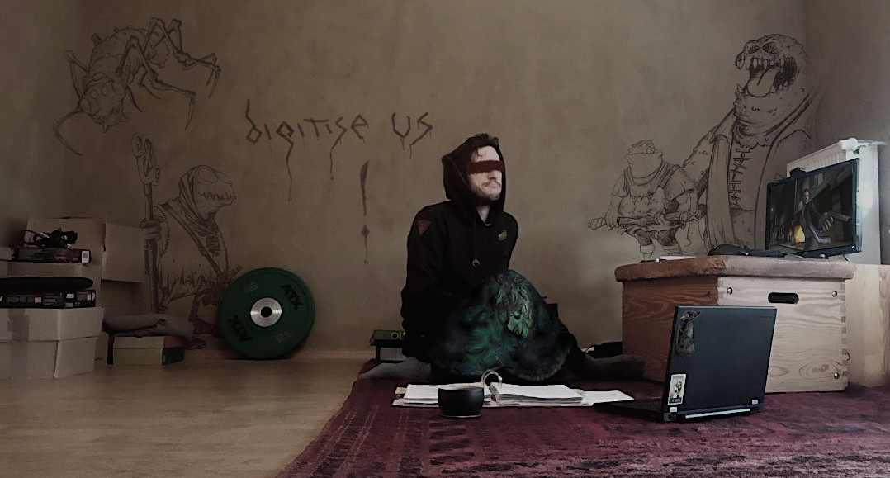
18.02.2021 - Intrare nouă în jurnal
Am scanat documentele la cea mai bună calitate disponibilă pentru mine, dar a trebuit totuși să refac manual fiecare pagină, de exemplu pentru a acoperi găurile în care erau capsate paginile sau pentru a regla contrastul paginilor puternic decolorate.
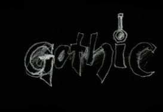
Deoarece documentele erau abia organizate, a trebuit să dezvolt o structură. Am separat desene conceptuale mai elaborate de schițe simple. Și am tăiat câteva pietre prețioase de pe paginile pline de mâzgăleli pe care Mike este reticent să le publice pentru ca eu să le pot publica. Printre acestea, de exemplu, această primă schiță a siglei.
Era o mică ordine în dosar cu înregistrările prin intermediul unor dungi galbene, etichetate. Le-am scanat și pentru a-mi face foi de acoperire pentru structura mea. Scopul meu era să iau în calcul designul și să-l prezint într-un mod rezonabil de atrăgător. Sper că am reușit și sper că unii oameni se vor bucura de asta. Arhiva noastră Gothic va crește cu aproximativ 1 GB.
03.02.2021 - Intrare nouă în jurnal
Ora 8. Ar fi trebuit să scriu un examen. Desigur, nu învățasem nimic. M-am întrebat dacă ar trebui să merg, aș putea citi rezumatul cuiva în timpul călătoriei cu trenul. Va fi suficient, m-am gândit. Dar când am ajuns la stația de autobuz, mi-am dat seama că mi-am uitat portofelul. Deci, înapoi din nou.
Acum aș fi întârziat oricum și nu trebuia să merg mai mult. Așa că am vrut să folosesc ziua pentru a scana mai multe documente când brusc Tom Putzki a intrat pe canalul nostru. Așa că am luat legătura din nou.
Oh, da: Tom folosește Signal și tot nu îl ai! Este timpul să părăsiți vechii zei, să-i ia naiba pe facebook, WhatsApp și altele asemenea. Cel care doarme îi va distruge și ne va aduce libertate! ;)
În orice caz, am putut să organizez un alt interviu cu el pentru aniversare și el ne-a trimis materiale suplimentare pentru arhivă. Rareori am fost atât de fericit că mi-am uitat portofelul.
Nu numai fanii Gothic Alpha din întreaga lume, ci și din ce în ce mai mulți dezvoltatori Gothic sunt adunați pe canalul nostru. Sperăm că vor mai fi câțiva, chiar dacă nu toți sunt încă la fel de conectați la joc ca Mike și Tom. Dar motivația cu care aș fi fost fericit de Crăciun - iată-o. Mulțumim tuturor susținătorilor noștri care ne motivează în canal.
Ce facem aici
Gothic a fost creat sub premisa că proiectarea jocurilor din acea vreme avea probleme fundamentale pe care cineva dorea să le rezolve. Nu au vrut doar să se alăture conceptului de succes al altor jocuri din vremea lor (chiar dacă a existat o mulțime de inspirație în ceea ce privește mecanica jocului), ci s-au abătut. Pentru că erai convins de propriile tale idei pe care nu le puteai găsi în altă parte. Viziunea lor nu a fost condusă doar de ideea de a face ceva propriu, ci de a face ceva diferit. Principiul a fost: alte jocuri sunt de rahat, noi îl facem pe al nostru.
Munca noastră la Phoenix este, de asemenea, motivată de cele două circumstanțe, pe de o parte, Gothic în sine nu a putut realiza ceea ce promisese anterior și, pe de altă parte, de 20 de ani, niciun alt joc nu a putut oferit ceva din sau să echivaleze viziunea originală Gothic cu imersiunea sa radicală. Nu aș fi început niciodată proiectul dacă ar fi existat așa ceva, dacă nu ar fi fost nevoie ca cineva să o facă. Facem treaba pentru că nimeni altcineva nu o face:
„Mântuirea designului”. Titlul înseamnă salvarea documentelor de proiectare ale lui Mike? Înseamnă el să salveze o viziune a unui joc așa cum a fost conceput cândva? Sau - destul de presumptuos - salvarea designului jocului în sine?
Jocurile sunt acum produse ca pe o linie de asamblare. Majoritatea nu mai merită menționate. Sunt distracții arbitrare, fără sens, fără atenție la detalii. Încercăm să spunem o dramă cu sens, cu implicații profunde. Vrem să facem un joc care să indice dincolo de sine. Arta nu se face în fabrici; nu poate fi industrializată, nu este produs în așa-numita „industrie a jocurilor”. Este plin de artiști, fără îndoială, dar arta lor este în mod constant coruptă de contextul industrial: presiunea timpului, cercetarea pieței, generarea de bani etc.
Oriunde există artă, aceasta nu există din cauza contextului industrial în care este creată, ci în ciuda ei. Iar cele mai valoroase jocuri din ultimii 20 de ani, cele mai iubitoare, detaliate și fără compromisuri, nu au fost realizate în fabricile de jocuri mari, ci în fabrici mici, în studiouri independente, uneori de către persoane fizice. În opinia mea, aici s-a schimbat centrul artei.
Se deplasează către locul în care îi dai un spațiu artei.
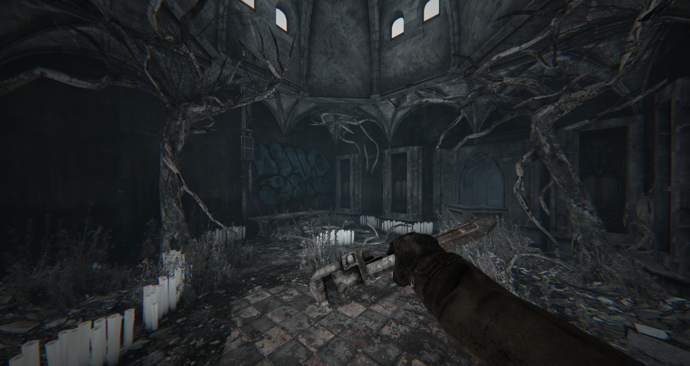
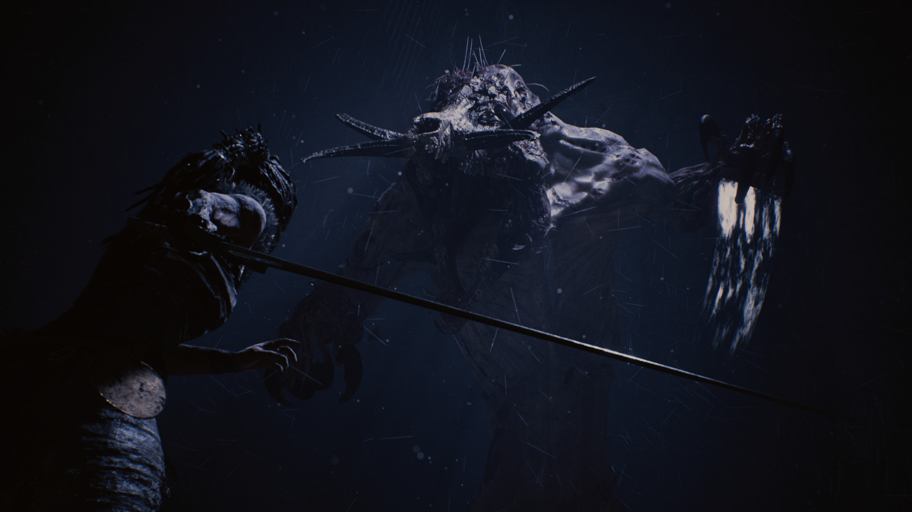
Total Chaos, Dusk, diverse modificări STALKER, definesc Atmosfera și design-ul de artă. Titluri precum Fran Bow și Hellblade spune povești cu sens - și ajută oamenii.
În comparație, nu sunt atât de mulți bani implicați în aceste lucrări, dar cu atât mai mult conținut, substanță artistică. Pot exista cazuri în care ambele se întâlnesc. Sunt excepția, nu regula. În GOTHIC este prezentat acest potențial pentru o operă de artă. Poate că nu și-au făcut dreptate. Dar au creat ceva care este atemporal. Cei patru fondatori responsabili de GOTHIC erau idealiști. Și asta se poate simți și astăzi.
În industria jocurilor, la fel ca în industria cinematografică, miliarde sunt irosite în blockbustere nesolicitate, astfel încât un proiect precum Joker (interpretat de domnul Phoenix;)) să vine după colț pentru a obține profituri uriașe la un buget relativ mic. Nimeni nu-și poate imagina că există o piață pentru ceva cu standarde ridicate.
Niciun proiect nu va salva designul jocului de ceea ce ne deranjează; pentru a face acest lucru, ar trebui să schimbăm ceva despre condițiile economice în care este creat; în timp ce suntem dincolo de el, dincolo de piață, prin faptul că nu vindem jocul ci îl dăm. Dar putem reuși să salvăm un design al jocului realizând vechea idee a GOTHIC, ceea ce considerăm a fi cel mai bun - potențial - joc din lume.
Asta facem. Încercăm să depunem o mărturie pentru a ne aminti ceva care se pierde în ochiul unui meșteșug prins în ideologia creșterii și degradat de la artă la „industrie”: dragostea. Încercăm să facem un joc iubitor a cărui viziune nu este coruptă de timp, bani sau orice compromis, dincolo de domeniul necesității. Pentru dragostea ideii, încercăm să reaprindem acest Phoenix din cenușa industriei și să-l lăsăm să răsară. De mână.
Și fie că sunt mâini tremurătoare, ca ale mele.
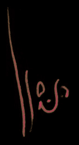

Florian aka flosha
15 Martie 2021
Dacă vrei să mă sprijini și PhoenixTales, poți să donezi pe LiberaPay.